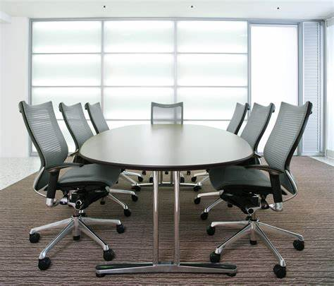

Okamura

1945
Okamura founded on October 10
Okamura-cho, Isogo-ku, Yokohama, Kanagawa
1948
Okamura restructured as a joint-stock company
Torque converter R&D started
1951
Production started on steel desks and chairs
Torque converter production began
1953
The N-52, Japan’s first postwar airplane, completed
1955
Mikasa, Japan’s first automatic front wheel drive car, developed
1957
Mikasa Mark I and Mikasa Sport displayed at the 4th Japan Motor Show
Tokyo Sales office and showroom opened in Akasaka
Steel office desks and chairs launched
Gondola store shelving launched
Torque converter for small forklifts developed
1958
Oppama Plant operations commenced.,
1973
Headquarters moved to Yokohama Tenri Building
Technology partnership with Ermanco Co. in the USA for conveyors
1974
Takahata Plant in Yamagata completed
New Otani Showroom opened
1975
Manufacturing of system kitchen began
1976
Movable partitions launched
Okamura Multiple Unit Display System launched
1978
No-defrost refrigerated showcase system launched
Rotary Rack launched
1979
Osaka Showroom opened